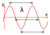

wavelength
property

Source: Wikipedia
Wikipedia Page (Something wrong with this association? Let us know.)
Wikidata Page (Something wrong with this association? Let us know.)
Occurs in:
- channel_meandering__wavelength
- earth_interior_earthquake_p-seismic-wave__wavelength
- earth_interior_earthquake_s-seismic-wave__wavelength
- sea_surface_water_wave__wavelength
- sea_water_internal-gravity-wave__wavelength
- sea_water_internal-gravity-wave__wavelength
- airy-wave__wavelength
- cnoidal-wave__wavelength
- sine-wave__wavelength
- stokes-wave__wavelength
- earth_interior_earthquake_p-seismic-wave__wavelength
- earth_interior_earthquake_s-seismic-wave__wavelength
- earth_interior_p-seismic-wave__wavelength
- earth_interior_s-seismic-wave__wavelength